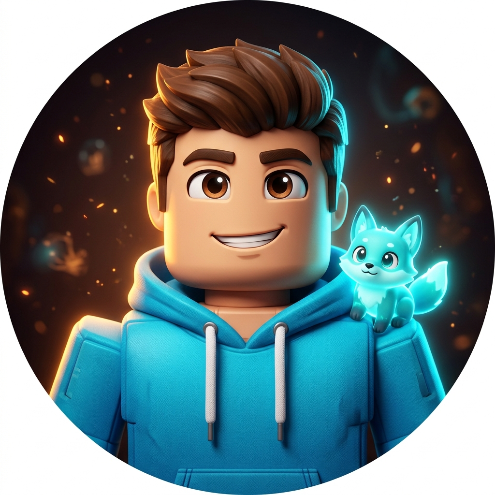

Eli has the weakest arms in town and gets a 1-coin frog named Kevin. He trains obsessively, buys the legendary Golden Cheese, and throws it past the mountains. A giant gold dragon bows before him... but then the titans start throwing giant food back at the town!